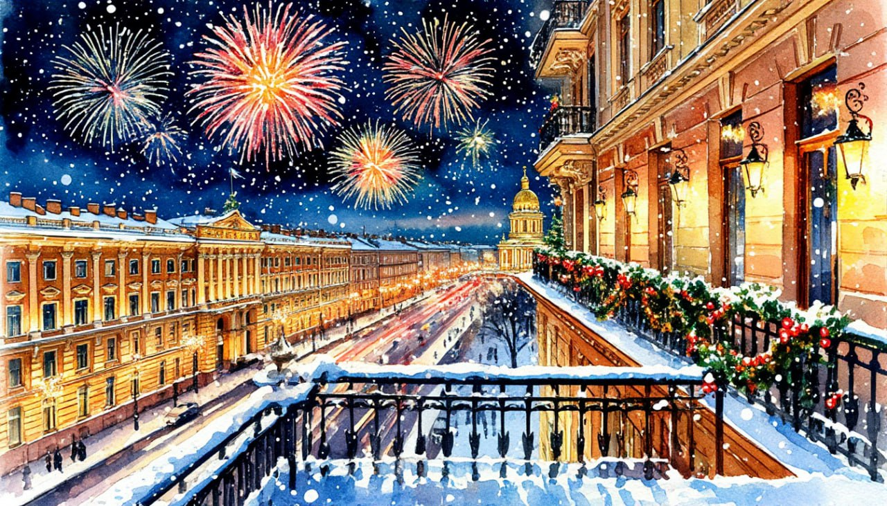

Новый Год в River Palace Hotel

Даты тура: с 30 декабря 2025 года (вт) по 3 января 2026 года (сб)
Стоимость тура:
- 24 000 р. - взрослый
- 23 900 р. - пенсионеры/школьники
- 31 000 р./чел - одноместное размещение
По программе:
- - Казанский собор
- - Территория Петропавловской крепости
- - Вечерняя экскурсия по праздничному городу
- - Царское село
- - Софийский собор
- - Павловск
- - размещение River Palace Hotel 4* – изысканный бизнес-отель
- - Для желающих банкет в кафе города или в отеле- за доп.плату
- - Беспроигрышная лотерея
Программа тура:
1 день:
- 17-00- выезд из Костромы от ТРЦ "РИО"
2 день:
- Прибытие в Санкт-Петербург.
- Завтрак в кафе города.
- Обзорная экскурсия «В поисках новогодних чудес» с осмотром главных архитектурных достопримечательностей города. В канун Нового года, как известно, все желания исполняются, а в Санкт-Петербурге они исполняются вдвойне, так как помогают нам в этом герои Петербурга - Чижик-Пыжик, Атланты, Грифоны и другие волшебные существа, которые ждут встречи с вами.
- Вы увидите самые знаменитые архитектурные ансамбли исторического центра Санкт-Петербурга: Стрелка Васильевского острова и Петропавловская крепость, Двенадцать Петровских коллегий и дворец Меншикова, созвездие трех площадей: Сенатской, Исаакиевской и Дворцовой, Спас на крови, ансамбль Марсова поля и Летний Сад, Смольный собор и конечно же Невский проспект.
- Посещение Казанского собора
- Экскурсия по территории Петропавловской крепости, где завораживают тайны первых городских зданий и улочек, стремительный шпиль Петропавловского собора и великолепный панорамный вид на Неву.
- Обед в кафе
- Заселение в гостиницу*
- *«River Palace Hotel»
- Свободное время.
За дополнительную плату (по желанию) СТРОГО ПРИ БРОНИРОВАНИИ ТУРА:
- 1 вариант. Новогодний банкет в ресторане отеля. СТОИМОСТЬ УТОЧНЯЕТСЯ
- 2 вариант. Для желающих возможен выезд на празднование нового года в кафе "Чайковский". Стоимость: 9 700 р/человек.
- Выезд организованно группой на автобусе на банкет. Интересная программа не даст заскучать.
- Зажигательный Новый 2026 год в компании с поющим ведущим ОЛЕГ ВОЛГА «Новогодний серпантин» (пришлем программу и меню по запросу)
- Так же в свободное время у Вас будет возможность побывать на Дворцовой площади.
3 день:
- Поздний завтрак в отеле
- Свободное время
- 16-00 Вечерняя автобусная экскурсия «В сиянии Новогодних огней» позволит окунуться в праздничную атмосферу северной столицы. Улицы и набережные, площади и проспекты предстанут в лучах художественной подсветки. Незабываемое впечатление произведут дворцы и памятники в сиянии новогодних огней.
- В программе:
- - Живописный уголок недалеко от центра города - Смольный собор.
- - Главная достопримечательность Нового года в Санкт-Петербурге - Новогодняя Ёлка на Дворцовой площади.
- - Интересная остановка на старейшей площади Санкт-Петербурга - Троицкой площади.
- - Самая большая новогодняя ярмарка на Пионерской площади. И многое другое...
4 день:
- Завтрак в отеле
- Загородная экскурсия в Царское Село «Жемчужина галантного века».
- Проехав 25 км по старой Царскосельской дороге, Вы примерно через час окажетесь в блистательном мире бывшей официальной резиденции русских императоров – Царском Селе. В ходе экскурсии Вы узнаете, когда появился этот пригород Санкт-Петербурга, какие события с ним связаны и почему его часто называют «город муз». Особую известность Царскому Селу принес роскошный и неповторимый Екатерининский дворец.
- За дополнительную плату (по желанию) СТРОГО ПРИ БРОНИРОВАНИИ ТУРА:
- экскурсия в Екатерининский дворец
- Одна из самых блистательных резиденций династии Романовых, в которой сохранились интерьеры середины XVIII века, выполненные в стиле «русского барокко». «Золотая анфилада» залов Екатерининского дворца, созданная архитектором Растрелли, была задумана, чтобы поразить любого своим богатством и пышностью. «Янтарная комната», входящая в Золотую анфиладу, приумножила славу Екатерининского дворца: взрослые – 1 500 р., пенсионеры - 900 р., дети с 14 до 18 лет – 900 р., дети с 7 до 14 лет – 600 р., дети с 0 до 7 лет - бесплатно Студенты очных факультетов при наличии студенческого билета - 900 р. ВНИМАНИЕ Участники специальной военной операции, члены семьи участников специальной военной операции – БЕСПЛАТНО.
- Посещение Софийского собора
- Величественный Софийский собор – одно из первых храмовых сооружений в России, построенное в стиле русской классики. Задуманный императрицей Екатериной II, как главный собор уездного города, храм более ста лет служил военным. Под его сводами молились Суворов и Кутузов, Пушкин и Лермонтов, знаменитые ученые, композиторы, художники, здесь побывали почти все знаменитые иноземцы, посещавшие Россию.
- Переезд в Павловск.
- Совсем недалеко от Царского Села расположился Павловск — вотчина супруги Павла I, императрицы Марии Федоровны. Прогуливаясь по уютным аллеям, вы узнаете о создании дворцово-паркового ансамбля, а после желающие смогут посетить Павловский дворец
- 17-00 Поздний обед
- Выезд из Санкт-Петербурга
5 день:
Прибытие в Кострому в первой половине дня (ориентировочно)
В стоимость тура входит:
- - проживание в гостинице*
- *River Palace Hotel 4* (Номер реестровой записи: С782024005857)
- - питание: 3 завтрака + 2 обеда
- - услуги гида-экскурсовода
- - экскурсионная программа
- - автобусное обслуживание по программе тура
Дополнительно оплачиваются (по желанию) СТРОГО ПРИ БРОНИРОВАНИИ ТУРА:
- Банкет в кафе «Чайковский» 2026 с программой - 9700 руб./чел.
- - Новогодний банкет в River Palace Hotel - СТОИМОСТЬ УТОЧНЯЕТСЯ
- - Экскурсия в Екатерининский дворец: взрослые – 1 500 р., пенсионеры - 900 р., дети с 14 до 18 лет – 900 р., дети с 7 до 14 лет – 600 р., дети с 0 до 7 лет - бесплатно Студенты очных факультетов при наличии студенческого билета - 900 р.
- ВНИМАНИЕ Участники специальной военной операции, члены семьи участников специальной военной операции – БЕСПЛАТНО.
Стоимость тура не зафиксированы и могут быть изменены в большую или меньшую сторону в зависимости от уровня спроса в любой момент.
Время начала экскурсий и их порядок указано ориентировочно.
Фирма-исполнитель оставляет за собой право замены экскурсий без уменьшения общего объема экскурсионной программы.
По вопросам бронирования обращайтесь: